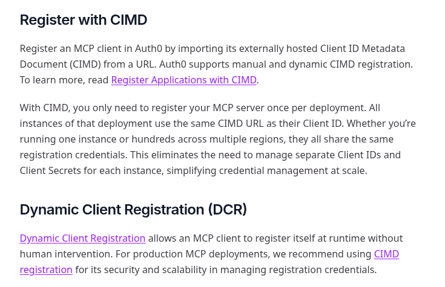
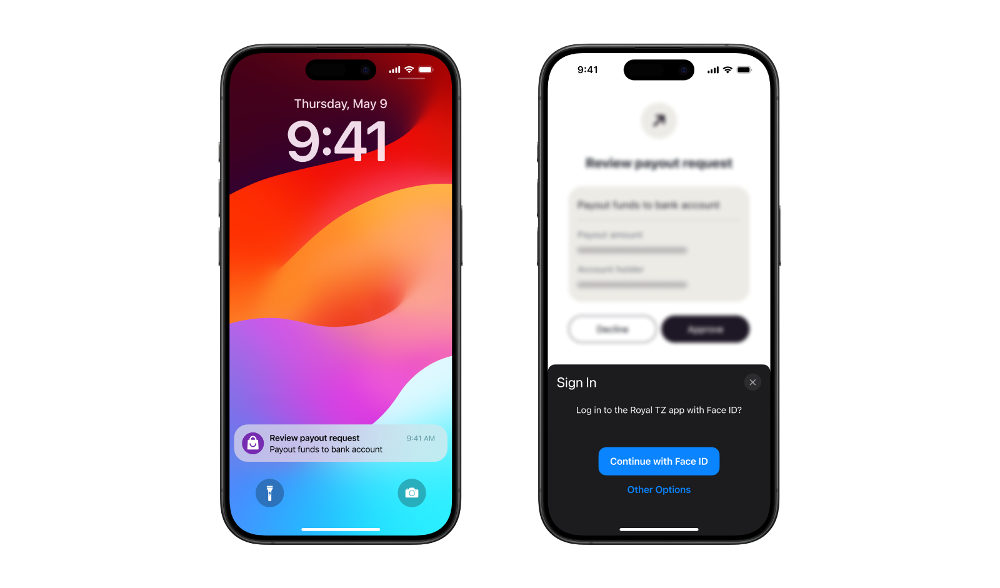

20 min · 01 / 19
Trust, but
verify.
verify.
Human-in-the-loop for agents that actually matter —
matching the interruption to the consequence.
matching the interruption to the consequence.
Michael Liendo
Staff Developer Advocate
Auth0 · @focusotter

20 min · 02 / 19
The Shift
Agents aren't just
answering questions
anymore.
answering questions
anymore.
They're booking flights, sending emails, moving money.
"Going wrong" no longer means a bad answer —
it means a real-world consequence.
The question isn't whether to trust your agent.
It's when — and how much.
20 min · 03 / 19
Capable vs. Accountable
We spent two years making agents capable.
Who's making them accountable?
Who's making them accountable?
- The missing layer isn't a bigger model — it's identity & authorization.
- Every action an agent takes is an action taken as someone.
- The real question isn't "can it?" — it's "should it, right now, on whose authority?"
20 min · 04 / 19
The Map
As the stakes rise, the type of check changes.
01 · Interrupt
"Just ask me."
A quick question mid-task. Zero ceremony.
02 · Token Vault
"Act for me."
Permission to reach an external system on your behalf.
03 · CIBA step-up
"Prove it's me."
A high-stakes change that can't happen on a chat "yes."
04 · Payments
"Move my money."
Irreversible. The human holds the final tap.
Four checkpoints, one grooming shop — the stakes rise with every stop, and the last one spends a real dollar.
Anna · 05 / 19
Our client
Anna's Dog Grooming wants an agent.
🛁
Bath & Brush
Today
Log in with Auth0, then pick a slot on the booking form
With an agent
"Bath & Brush for Max, Saturday morning."
✂️
Full Groom
Today
Same login, same form: dogs, service, time
With an agent
It asks for what's missing, then books it
🐾
Nail Trim
Today
A whole form for a ten-minute errand
With an agent
One sentence, and it's on your calendar
today: log in with Auth0 → fill a booking form · the job: modernize it with an agent
Pattern 01 · 06 / 19
Pattern 01
Interrupt
Mid-task pause.
Agent asks. Human answers.
Agent continues.
- Low stakes, preference-based decisions
- Synchronous — the agent waits for you
- One AI SDK tool with no
execute
How it looks in code
const result = streamText({
model: 'anthropic/claude-sonnet-5.5',
system: `You book visits for Anna's Dog Grooming.
Ask ONE question at a time. Confirm before booking.`,
messages: await convertToModelMessages(messages),
tools: {
askCustomer: tool({
description: 'Ask the customer and wait for the answer',
inputSchema: z.object({ question: z.string() }),
}), // no execute → the run pauses here createBooking: tool({ inputSchema: booking,
execute: saveBooking }),
},
})
// client: the customer's answer resumes the run
addToolOutput({ tool: 'askCustomer', toolCallId,
output: 'Full Groom · 2 dogs · Sat 10am' })
No execute = the agent waits. Your UI supplies the answer.
Pattern 02 · 07 / 19
Pattern 02
Token Vault
Agent hits a wall.
It stops and asks you.
You consent. It resumes.
- Missing Google Calendar scope found at runtime
- Agent pauses, then you consent
- Tool gets a token by exchange
The pattern in action
const withGoogleCalendar = auth0AI.withTokenVault({
connection: 'google-oauth2', scopes: ['openid',
'https://www.googleapis.com/auth/calendar.events'],
refreshToken: getRefreshToken,
})
export const calendarBooking = withGoogleCalendar(tool({
description: 'Put the confirmed booking on my calendar',
inputSchema: z.object({ bookingId: z.string() }),
execute: async ({ bookingId }) => {
const token = getAccessTokenFromTokenVault()
return insertEvent(token, bookingId)
},
}))
Scope not granted yet? The tool throws a Token Vault interrupt: the chat pauses,
you consent, the tool resumes. Auth0 keeps the Google tokens; the agent never sees your password.
No silent scope creep. Ask, consent, resume.
Live Demo · 08 / 19
Live Demo 01 · Anna's Dog Grooming
Book it. Then calendar it.
The chatbot gathers the booking, then needs my Google Calendar. It pauses and asks before Token Vault gets the extra scope.
log in with Auth0chat gathers detailspauses · asks for Calendarevent on my calendar
MCP · 09 / 19
What Auth0 is hearing from customers
10–40%
of brand traffic now goes through third-party agents, not their websites.
So Anna's app already ships an MCP server, and I'll book and cancel from a harness I picked: Grok Bot.
Auth0 keynote · Sep 24, 2026 · 15:50 · what customers report, not a study
MCP · 10 / 19
Front door + downstream
Any MCP client can register.
Every call behind it stays scoped.
Every call behind it stays scoped.
Auth0 supports DCR and the new CIMD registration flow for the front door. OBO carries the user to the APIs behind the MCP server.
Grok BotDCR · CIMD →Anna's MCPOBO →Anna's API
auth0.com/ai/docs/mcp/guides/registering-your-mcp-client-application

Pattern 03 · 11 / 19
Pattern 03
Step-Up
Client-Initiated Backchannel Auth (CIBA) · by email
For a change too high-stakes for a chat "yes."
- Destructive actions, like a cancellation
- Out-of-band, approved in your inbox
- Not a chat confirm: authorization
Cancelling a groom
1
Agent calls cancel_appointment; it starts a CIBA request2
Auth0 emails me: "Cancel-groom-#…"3
The booking stays put until I answer4
Accept deletes it. Deny or expiry: still booked
Token Vault = consent for a third-party API. CIBA = step-up for a sensitive action, approved outside the chat.
Live Demo · 12 / 19
Live Demo 02 · Anna's MCP · Grok Bot
Cancel it from any harness.
Grok Bot connects to Anna's MCP server. I sign in with Auth0, list my bookings, and ask to cancel. The delete waits for an email I Accept.
Grok Bot → Anna's MCPsign in with Auth0list upcoming bookingscancel → email → Accept deletes
anna-grooming-talk.vercel.app/mcp
Pattern 03 · 13 / 19

Same CIBA flow, different channel. These screens show a Guardian push; today's demo uses email. This demo requests 301 s to select the email channel.
MCP · 14 / 19
Elicitation
Two ways to ask the human.
The MCP-native way
elicitation/create · form mode
- Mid-tool-call, the server asks. The client renders a form from a JSON schema.
- Flat, simple fields: "Which dog? What time?"
- The user can accept, decline, or cancel.
- Never for secrets: no passwords or API keys in form mode.
- Only if the client supports elicitation.
The way that's been around a while
send them to a URL · now MCP "URL mode"
- Hand the human a link: OAuth consent, a checkout, an email.
- Sensitive input never passes through the client.
- The user sees the real domain and consents before going.
- Now standardized in MCP as URL mode (spec 2025-11-25).
- Same move as the Token Vault consent and the CIBA email.
Something you'd type in chat? Form. Anything secret or authoritative?
A URL the client never sees inside.
Payments · 15 / 19
Anna's next ask · agents that pay
402 says pay. It does not say how.
Not how much, not to whom, not in what currency. A locked door with no
instructions. The header beside it picks the protocol.
WWW-Authenticate: Payment
a Payment HTTP auth scheme · cards, stablecoins, and other methods
MPP
PAYMENT-REQUIRED
its own header (v2) · commonly stablecoins, but extensible by scheme
x402
You already know this pattern: 401 never told a client how to
authenticate — WWW-Authenticate named the scheme. 402 is that, thirty years late.
Payments · 16 / 19
Anna's next contract · agentic payments
Three ways to hand an agent your card.
💳
Share the card
Agent holds
Your actual card number
Blast radius
Unbounded, until you notice and cancel it
💳
Virtual card
Agent holds
A proxy card number
Blast radius
Limited by the issuer (merchant, amount, time) but still a live card number
🎫
Shared Payment Token
Agent holds
An identifier
Blast radius
Scoped to one seller, with expiry and usage limits. Not spendable anywhere else.
passwords → API keys → OAuth tokens · replayed on payment rails, fifteen years later
Live Demo · 17 / 19
Live Demo 03 · climate.stripe.dev · real $1
One command.
One real dollar.
One real dollar.
npx @stripe/link-cli mpp pay https://climate.stripe.dev/api/contribute \
-X POST -d '{"amount":100}' \
--context "Purchase carbon removal credits via Stripe Climate API: one US dollar during the Trust, but Verify talk at AI Engineer."
I say "yes," out loud
402 from climate.stripe.dev
I approve it
carbon removal, paid
The Takeaway · 18 / 19
If you remember one thing
Ask for a preference.
Get consent for access.
Get consent for access.
Step up for anything you can't undo.
Trust, but verify: match the interruption to the consequence.
Thanks · 19 / 19
Giveaway · 90-second tag
Phones out. Let's play tag.
scan the QR on the host page · 90 seconds · winner on the big screen
Auth0 Token Vault
auth0.com/docs/secure/tokens/token-vault
CIBA · Step-Up with Auth0
auth0.com/docs/…/client-initiated-backchannel-authentication-flow
Stripe · Machine Payments
docs.stripe.com/agents · npx @stripe/link-cli onboard
Play tag · QR on the host page
phaser-colyseus-tag-stage.vercel.app
Michael Liendo
Staff Developer Advocate · Auth0
x + linkedin · @focusotter